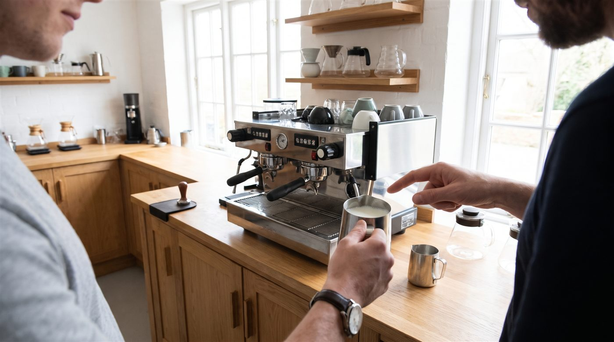
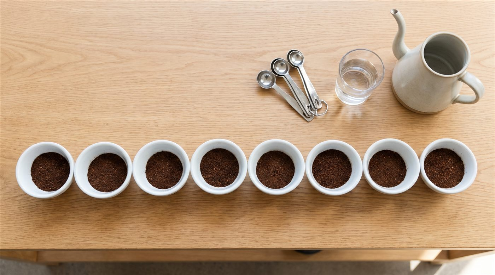
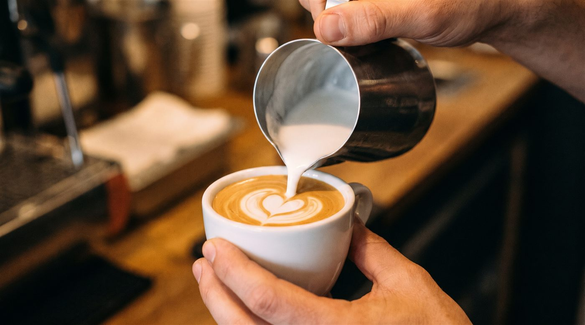

Inicio / Journal / Curso de barista: tipos, qué aprendes y cómo elegir uno que merezca la pena
Guías y consejos
Curso de barista: tipos, qué aprendes y cómo elegir uno que merezca la pena
Un buen curso de barista se mide en horas de práctica con la máquina, no en el nombre del diploma. Antes de reservar, pregunta cuántas personas hay por máquina, cuántas horas vas a preparar café tú y si el certificado está incluido en el precio. Si quieres un certificado reconocido en todo el mundo, busca un formador autorizado por la SCA (Specialty Coffee Association). Si solo quieres preparar mejor café en casa, te basta un taller práctico de métodos o de cata.

Qué tipos de curso de café hay

| Tipo de curso | Qué aprendes | Para quién |
|---|---|---|
| Taller de cata | A oler y probar café con método, distinguir orígenes y procesos, y poner nombre a lo que notas | Curiosos, amantes del café, regalos |
| Métodos de filtro | V60, Chemex, AeroPress, prensa francesa: molienda, proporciones y tiempos | Quien prepara café en casa |
| Barista (espresso y leche) | Ajustar el molinillo, preparar espresso, texturizar leche, arte latte básico, limpieza de la máquina | Quien quiere trabajar en una barra o abrir una cafetería |
| Tueste | Cómo cambia el grano con el calor, curvas de tueste, defectos y cata de lo tostado | Tostadores, cafeterías que quieren tostar, profesionales |
| Certificación SCA | El temario oficial de un módulo, con examen | Quien quiere un certificado reconocido internacionalmente |
Regla práctica: elige el curso por lo que quieres hacer después, no por el nombre que lleva.
Curso oficial SCA o curso libre: cómo funciona
La SCA tiene un programa de formación llamado Coffee Skills Program. Así está organizado:
- Introducción al café: un curso de entrada, con un solo nivel.
- Cinco módulos: Barista Skills (barista), Brewing (métodos de preparación), Green Coffee (café verde), Roasting (tueste) y Sensory Skills (análisis sensorial).
- Tres niveles en cada módulo: Foundation (inicial), Intermediate (intermedio) y Professional (profesional).
- Puntos: cada curso aprobado suma puntos para el Diploma SCA. La Introducción da 10 puntos; Foundation, 5; Intermediate, 10; y Professional, 25.
- Quién lo imparte: solo los formadores autorizados por la SCA, llamados AST (Authorized SCA Trainer), pueden examinar y emitir el certificado.
Introducción al café
- Foundationinicial
- Intermediateintermedio
- Professionalprofesional
¿Lo necesitas?
| Tu objetivo | ¿Certificado SCA? |
|---|---|
| Preparar mejor café en casa | No hace falta |
| Trabajar en una cafetería de especialidad | Ayuda, pero la práctica en barra cuenta más |
| Formar a un equipo o dar clases | Sí, es una buena base |
| Trabajar en tueste o compra de café verde | Sí, los módulos de Green Coffee, Roasting y Sensory son muy útiles |
Un curso libre, sin certificado SCA, puede ser igual de bueno o mejor en lo práctico. Lo importante es que te diga con claridad qué incluye y qué no.
¿Y el certificado de profesionalidad?
En España existe también el certificado de profesionalidad HOTR0508 Servicios de bar y cafetería. Es una formación oficial y larga, pensada para trabajar en hostelería en general: cubre bebidas, servicio, gestión del bar y más. No es un curso de café de especialidad, pero sí una cualificación oficial para trabajar en bar y cafetería.
8 preguntas antes de reservar un curso de barista

Señales de alerta
- Promete un "título oficial de barista" sin decir quién lo emite.
- No dice cuántas personas hay en el grupo.
- El precio no detalla si incluye examen, café y material.
- Todo es teoría: pocas horas con la máquina.
Cuánto cuesta un curso de barista y cómo compararlo
El precio varía mucho según las horas, el tamaño del grupo y si incluye certificado. Por eso, el precio total engaña. Usa esta cuenta:
Precio por hora de práctica = precio del curso ÷ horas que tú preparas café
Compara dos cursos
Curso A
—
Curso B
—
Pregunta a cada escuela cuántas horas preparas café tú, sin contar la teoría.
| Curso A | Curso B | |
|---|---|---|
| Precio | 150 € | 250 € |
| Horas totales | 6 h | 8 h |
| Personas por máquina | 6 | 2 |
| Horas de práctica tuyas (aprox.) | 1 h | 4 h |
| Precio por hora de práctica | 150 € | 62,50 € |
Ejemplo inventado para explicar la cuenta. No son precios reales de ningún curso.
El curso B parece más caro, pero practicas cuatro veces más.
Si buscas un curso de barista en Madrid
- Calcula el trayecto. Un curso de varios días a una hora de casa se hace largo. Mira el transporte público.
- Mira los horarios. Muchos talleres se hacen por la tarde o en fin de semana.
- Pide ver el espacio o fotos reales de la barra y las máquinas.
- Pregunta por el café. En Madrid hay mucha oferta de café de especialidad: pide que el curso use café recién tostado.
Qué curso elegir según tu caso
| Tu situación | Empieza por |
|---|---|
| Me gusta el café y quiero entenderlo | Taller de cata |
| Quiero preparar mejor café en casa | Curso de métodos de filtro |
| Quiero trabajar de barista | Curso de barista con mucha práctica; después, Barista Skills Foundation si quieres el certificado |
| Voy a abrir una cafetería | Curso de barista para ti y tu equipo, y asesoría para el proyecto: ver servicios |
| Quiero tostar mi propio café | Curso de tueste, junto con un taller de cata |
Nuestros cursos y talleres
Preguntas
Preguntas frecuentes
¿Otra duda? Escríbenos →01¿Cuánto dura un curso de barista?
Depende del tipo. Un taller de cata o de métodos suele durar unas horas. Un curso de barista con práctica de espresso y leche suele durar uno o varios días. Los cursos SCA de nivel intermedio y profesional son más largos que el inicial.
02¿Necesito experiencia para hacer un curso de barista?
No para un curso inicial, un taller de cata o un curso de métodos. Para los niveles intermedio y profesional de la SCA se recomienda haber hecho antes el nivel inicial y tener práctica en barra.
03¿Qué diferencia hay entre un curso de barista y el certificado SCA?
"Curso de barista" es un nombre libre: cada escuela decide el temario. El certificado SCA sigue un temario oficial, tiene examen y solo lo emite un formador autorizado por la SCA.
04¿Un curso de barista sirve para encontrar trabajo?
Ayuda, sobre todo si incluye muchas horas de práctica. En las cafeterías de especialidad suelen valorar más lo que sabes hacer en la barra que el diploma.
05¿Se puede regalar un curso de café?
Sí. Un taller de cata es un buen regalo para alguien a quien le gusta el café. Pregunta si la escuela ofrece tarjetas regalo y cuánto tiempo hay para usarlas.
Fuentes
- Specialty Coffee Association, Coffee Skills Program: https://education.sca.coffee/coffee-skills-program
- Specialty Coffee Association, cursos y formación: https://sca.coffee/education/courses
- Real Decreto 1256/2009, por el que se establecen certificados de profesionalidad de la familia de hostelería y turismo (HOTR0508 Servicios de bar y cafetería), BOE: https://www.boe.es/
Última actualización: 9 de noviembre de 2026. Los requisitos y precios de la SCA pueden cambiar: consulta siempre la web oficial.